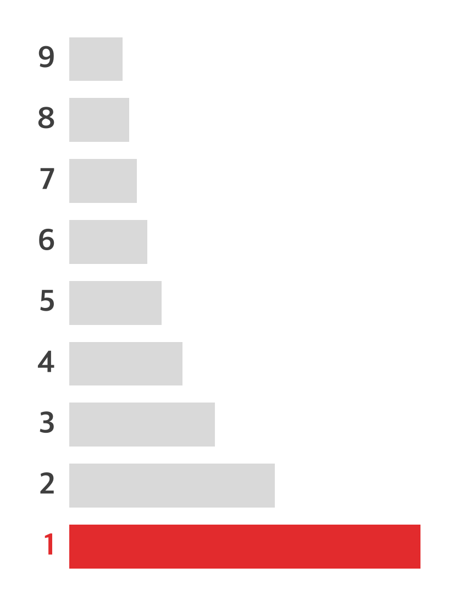
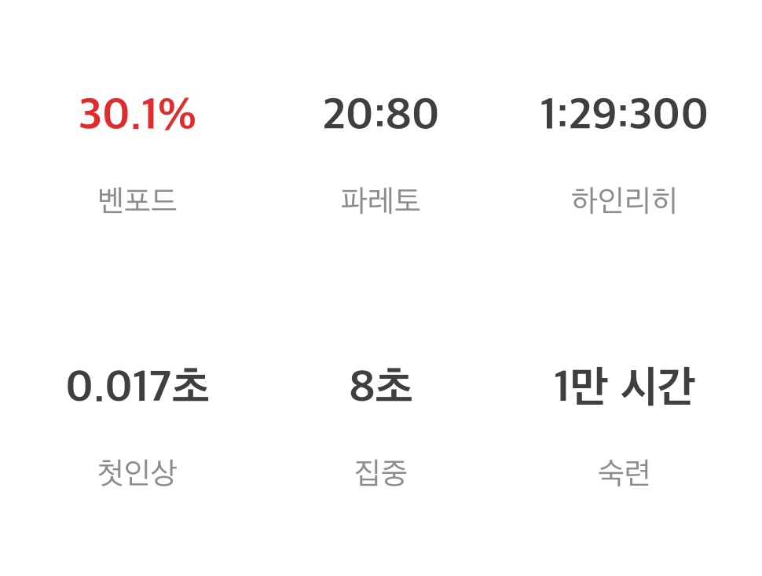

05
데이톨로지 — 데이터로 읽는 인간과 사회
주교재: 김성태, 『데이톨로지』 1부 · 강사 : ○○○

CONTENTS

목표 1
벤포드·파레토·하인리히·1만 시간 법칙의 뜻과 한계 지적
목표 2
벤포드 법칙으로 실제 데이터 검증
오늘의 질문
세상의 숫자들은
1로 시작하는 경우가 많을까,
9로 시작하는 경우가 많을까?
[비유] 번지가 늘어선 거리
사진: ell brown / CC BY 2.0
벤포드 법칙(Benford's law): 첫 자리 d의 비율 = log₁₀(1 + 1/d)
어디에 쓰고, 언제 안 맞나
활용
확장
조건
[비유] 옷장
사진: Sofy Marquez / CC BY 2.0
같은 그래프, 머리를 볼까 꼬리를 볼까
[비유] 금 간 벽
사진: shaire productions / CC BY 2.0
1 : 29 : 300 — 중대 사고 1건 앞의 경미한 사고 29건, 징후 300건
순간이 결정하는 것들 — 그리고 의심해 볼 숫자
0.017초
최근 정보
8초
[비유] 대나무 숲
사진: Lenny K Photography / CC BY 2.0
1만 시간의 법칙: 절대 조건이 아닌 노력의 상징
숫자 · 활용 · 비판적 질문
| 법칙 | 활용 | 비판적 질문 |
|---|---|---|
| 벤포드 | 회계 부정·선거 조작 탐지 | 모든 데이터에 맞을까? |
| 파레토 20:80 | VIP 마케팅, 시간 관리 | 롱테일과 승자독식, 플랫폼은 무엇을 키웠나? |
| 하인리히 1:29:300 | 안전 관리, 위험 예측 | 숫자보다 "징후 기록 문화"가 핵심 아닐까? |
| 8초 · 0.017초 | 발표·면접·광고 | 그 통계, 원 출처는? |
| 1만 시간 | 전문성 훈련 | 재능·환경·운은 어디에? |
활동 (60분): 실제 데이터로 벤포드 법칙 검증
공공데이터포털·KOSIS: 시군구 인구, 국가별 GDP, 상장사 시가총액 중 하나
첫 자리 =VALUE(LEFT(TEXT(A2,"0"),1))
이론 비율 =LOG10(1+1/d)
학생들이 지어낸 숫자 50개로 같은 분석 → 가짜 숫자의 분포
벤포드가 안 맞는 데이터의 공통점 찾기
오늘의 핵심 4줄
벤포드 = 자연 데이터 첫 자리 1이 약 30%, 고른 분포는 의심 신호
파레토·롱테일 = 머리의 집중 vs 꼬리의 합
하인리히 = 1 : 29 : 300, 징후 기록이 예방
태도 = 법칙도 숫자도 출처와 조건부터 확인
확인 문제
어느 회사 장부의 첫 자리 숫자가 1~9에 각각 약 11%씩 고르게 분포. 이 결과의 해석
하인리히 법칙의 세 숫자와 그 의미
벤포드 법칙이 잘 맞지 않는 데이터 예 한 가지
마무리
평균의 종말 — '평균 인간'은 존재하는가
사진 (Openverse 검색, CC 라이선스)